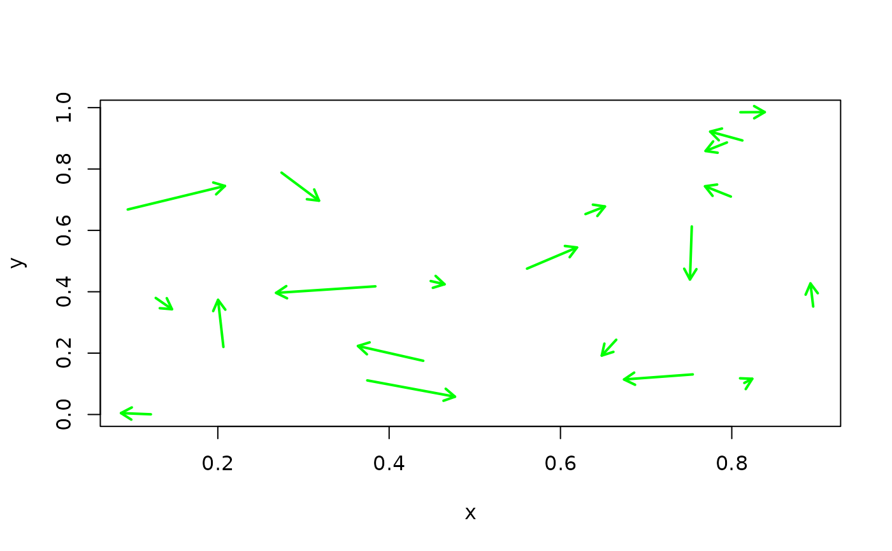

arrow.plot.RdAdds arrows at specified points where the arrow lengths are scaled to fit on the plot in a reasonable manner. A classic use of this function is to depict a vector field. At each point (x,y) we have a vector with components (u,v). Like the arrows function this adds arrows to an existing plot.
arrow.plot(a1, a2, u = NA, v = NA, arrow.ex = 0.05,
xpd = TRUE, true.angle = FALSE, arrowfun=arrows,...)The x locations of the tails of the arrows or a 2 column matrix giving the x and y coordinates of the arrow tails.
The y locations of the tails of the arrows or a 2 column matrix giving the u and v coordinates of the arrows.
The u components of the direction vectors if they are not specified in the a1 argument
The v components of the direction vectors if they are not specified in the a2 argument
Controls the length of the arrows. The length is in terms of the fraction of the shorter axis in the plot. So with a default of .05 20 arrows of maximum length can line up end to end along the shorter axis.
If true does not clip arrows to fit inside the plot region, default is not to clip.
If true preserves the true angle of the (u,v) pair on the plot. E.g. if (u,v)=(1,1) then the arrow will be drawn at 45 degrees.
The actual arrow function to use. The default is standard R arrows.
However, Tamas K Papp suggests p.arrows from sfsmisc which makes prettier
arrows.
Graphics arguments passed to the arrows function that can can change the color or arrow sizes. See help on this for details.
This function is useful because (u,v) may be in very different scales from the locations (x,y). So some careful scaling is needed to plot the arrows. The only tricky thing about this function is whether you want the true angles on the plot. For overlaying a vector field on top of contours that are the streamlines true.angle should be false. In this case you want u and v to be scaled in the same way as the x and y variables. If the scaling is not the same then the arrows will not look like tangent vectors to the streamlines. An application where the absolute angles are meaningful might be the hands of a clock showing different times zones on a world map. Here true.angle=T is appropriate, the clock hands should preserve the right angles.
arrows
#
# 20 random directions at 20 random points
x<- runif( 20)
y<- runif( 20)
u<- rnorm( 20)
v<- rnorm( 20)
plot( x,y)
arrow.plot( x,y,u,v) # a default that is unattractive
plot( x,y, type="n")
arrow.plot( x,y,u,v, arrow.ex=.2, length=.1, col='green', lwd=2)

# thicker lines in green, smaller heads and longer tails. Note length, col and lwd are
# options that the arrows function itself knows about.